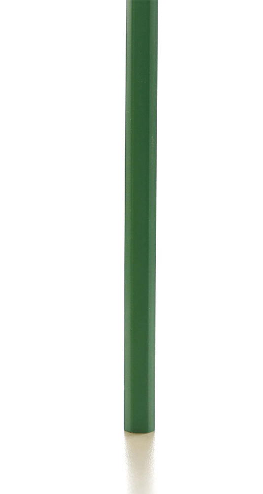
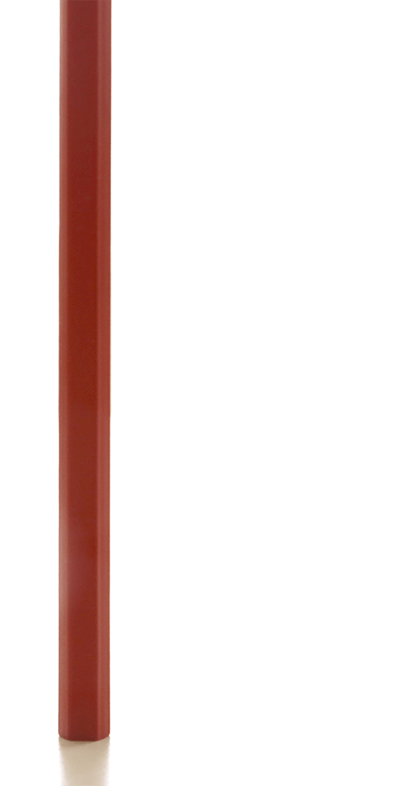
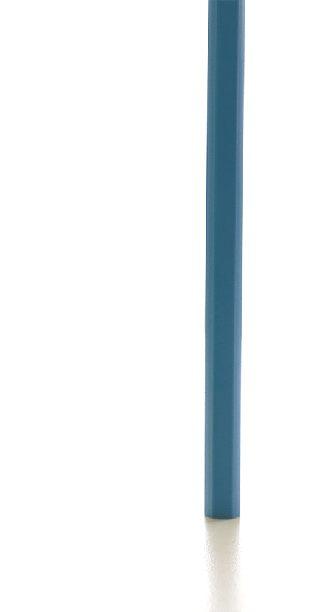
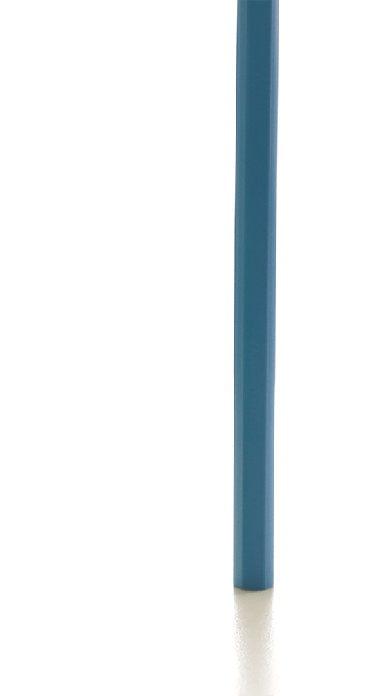
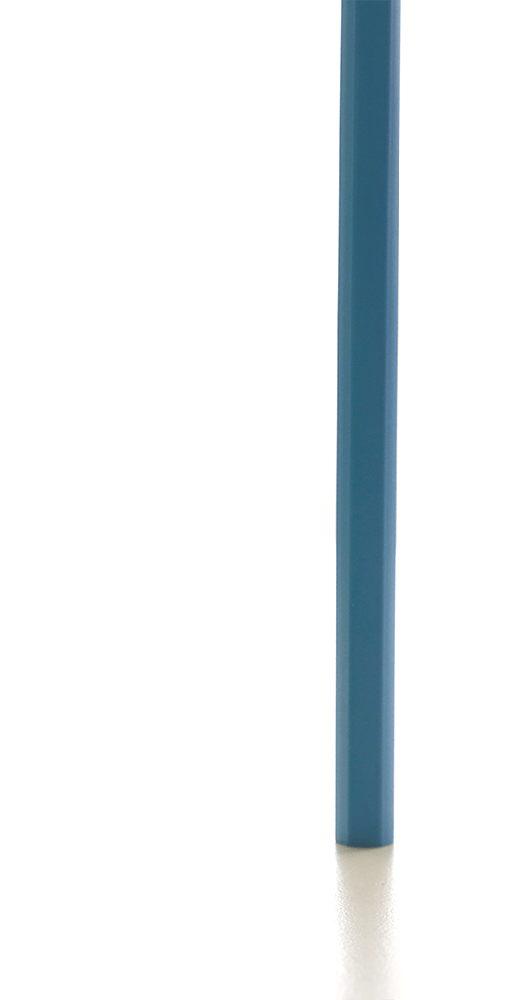

Comment est-ce que l'ouverture avec la profondeur de champs?


 





F1.8
F2.8
F4
F5.6
F8
F11
Il y a trois réglages qui permettent de régler l'exposition d'une photo. Un d'entre eux est l'ouverture.
Celle-ci se mesure en F# et plus son nombre est élevé plus l'ouverture est petite.
Mais l'ouverture permet aussi de régler la profondeur de champs : plus le F# est éevé plus différents plans de votre photo sont nets. À l'inverse plus le F# est bas plus la zone de focus est réuduite.
F1.8
F2.8
F4
F5.6
F8
F11